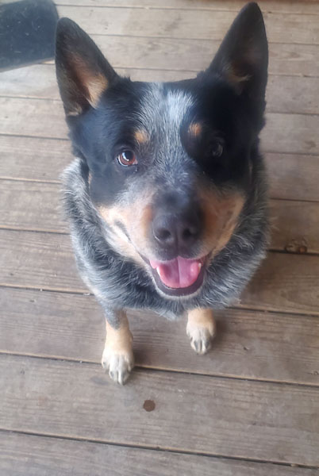

Dante, the Blue Heeler
Australian Cattle Dog
The Australian Cattle Dog, also known as the Blue Heeler or Red Heeler. Below ae some fast facts that we'll explore more.
Hey there, dog lovers! I'm Thomas, and this is my partner-in-crime, Dante, my spunky Australian Cattle Dog. Dante's not just a pet, he's my best friend, my co-pilot on adventures, and the reason I wake up with a smile every day. We are working on the website together to provide more information about this breed.